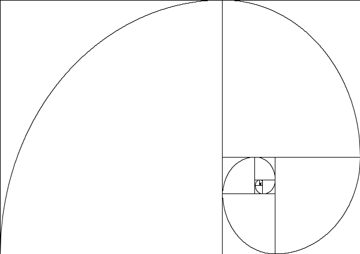

Generalități
 Printre infinitatea de șiruri existente în lumea matematicii, italianul Leonardo of Pisa, cunoscut și sub numele de Fibonacci, a descoperit un șir de numere extraordinar de interesant: „0, 1, 1, 2, 3, 5, 8, 13, 21, 34, 55, 89, 144, 233, 377, 610, 987, 1597…”. Formula pe baza căruia se obține acest șir este una foarte simplă: primele două elemente ale șirului sunt 0 și 1, iar al treilea element se obține adunâdu-le pe primele două: 0+1 = 1. Al patrulea se obține adunâdu-le pe al treilea cu al doilea (2+1=3). Al cincilea se obține adunâdu-le pe al patrulea cu al treilea (3+2=5), și tot așa, până la infinit.
Algoritm
Algoritmul de mai sus afișează primii n termeni ai șirului lui Fibonacci, considerându-i pe primii doi ca fiind 0 și 1. Algoritmul poate fi prelucrat ușor, în funcție de cerință.
Quiz
1. Șirul lui Fibonacci este:
2. Cum îl chema de fapt pe Fibonacci?
3. Fibonacci era originar din:
4. Care sunt primele două elemente ale șirului?
5. Cum se obține al treilea element?
6. Ce face algoritmul de mai sus?
7. Ce reprezintă n în algoritmul de mai sus?
8. Care este al 18-lea număr al șirului lui Fibonacci?
9. Cum ți se pare acest site?
10. Ai mai revizita acest site?
Întrebarea 1: Răspunsul corect este: Infinit.
Întrebarea 2: Răspunsul corect este: Leonardo of Pisa.
Întrebarea 3: Răspunsul corect este: Italia.
Întrebarea 4: Răspunsul corect este: 0 și 1.
Întrebarea 5: Răspunsul corect este: Le aduni pe primele două.
Întrebarea 6: Răspunsul corect este: Afișează primele n numere ale șirului lui Fibonacci.
Întrebarea 7: Răspunsul corect este: Numărul de numere ce se vor afișa din șirul lui Fibonacci.
Întrebarea 8: Răspunsul corect este: 1597.
Întrebarea 9: Răspunsul corect este: Perfecțiunea întruchipată.
Întrebarea 10: Răspunsul corect este: Dacă l-aș mai revizita?! De acum numai pe el o să stau! Cum prind Wi-fi pe el intru!.
Ai răspuns la toate corect!